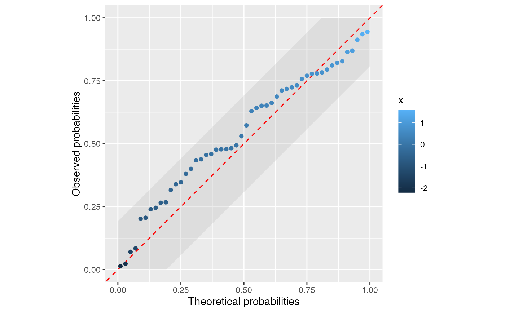
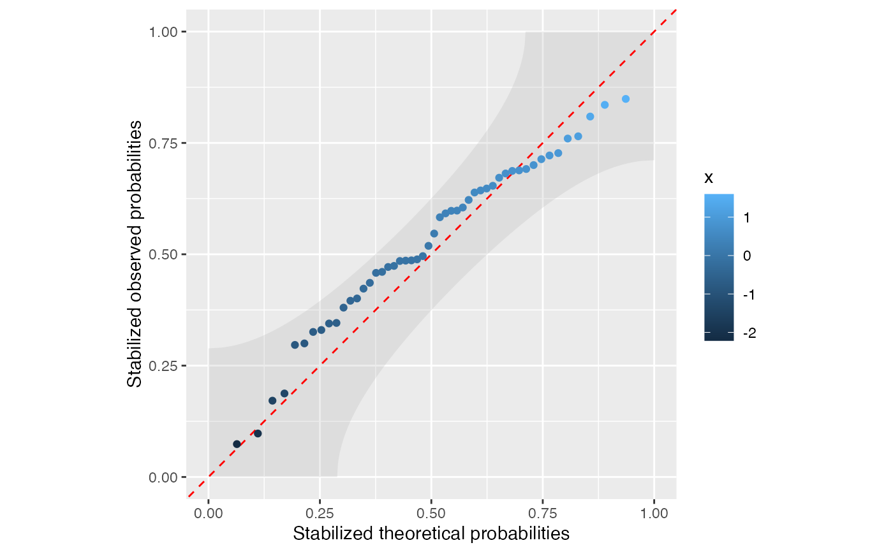
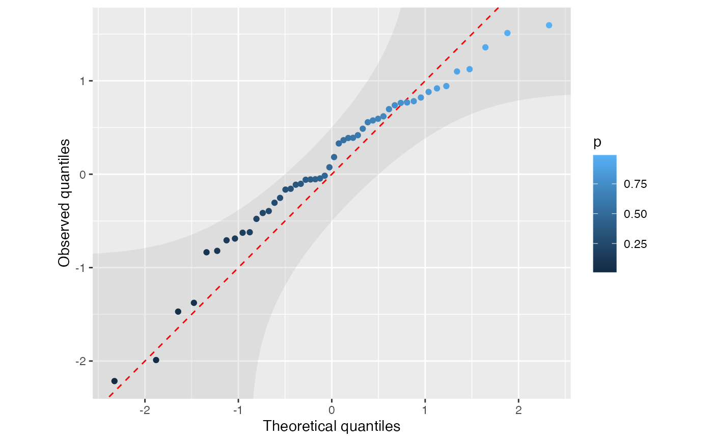
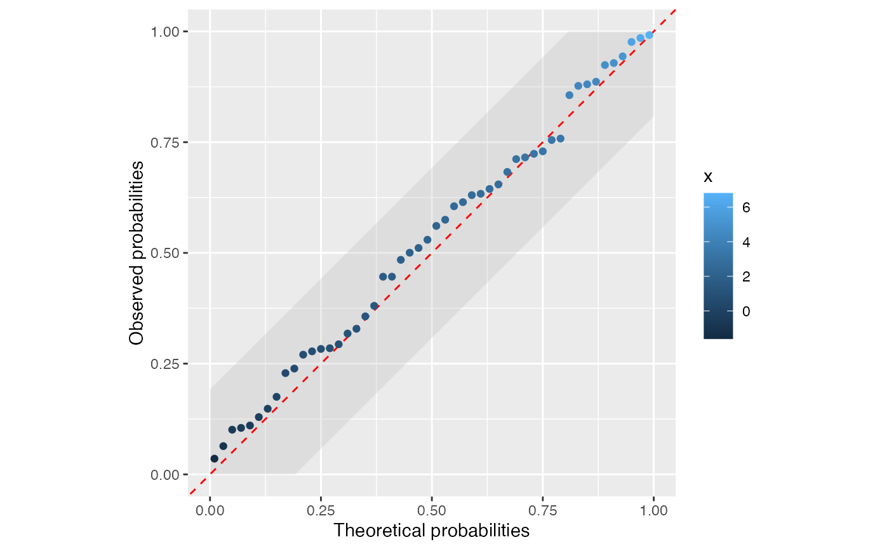
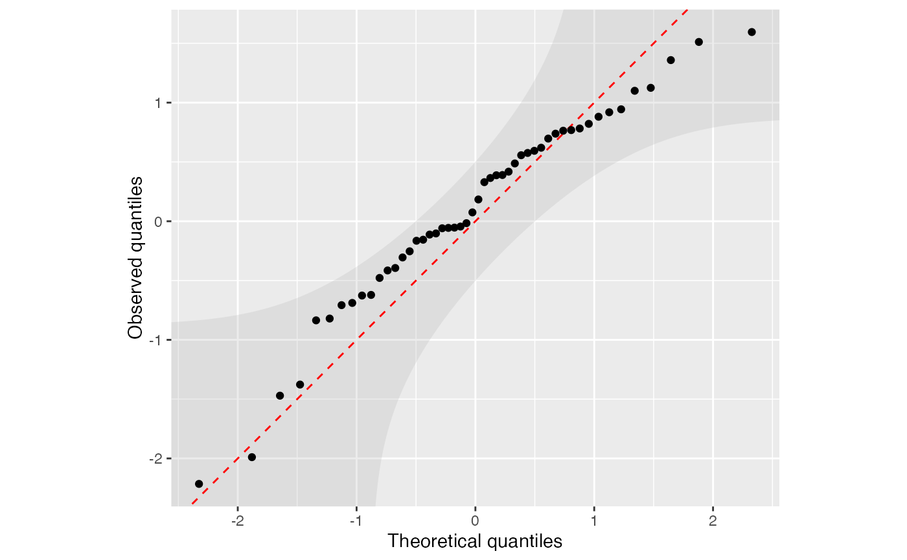
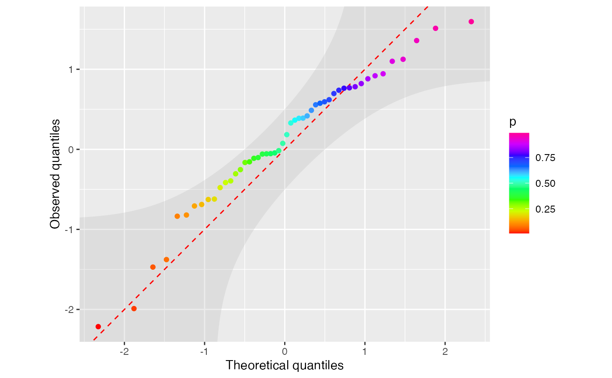

geom_ppplot(), geom_qqplot(), and geom_spplot() create one-sample
probability-probability, quantile-quantile, and stabilized probability
diagnostic layers for comparing a sample to a fully specified null
distribution. Each draws the order-statistic points, an optional identity
line, and a simultaneous 95% DKW/Massart confidence band by default.
Usage
geom_ppplot(
mapping = NULL,
data = NULL,
stat = StatPPPlot,
position = "identity",
...,
na.rm = FALSE,
show.legend = NA,
inherit.aes = TRUE,
fun = NULL,
pdf_fun = NULL,
survival_fun = NULL,
qf_fun = NULL,
hf_fun = NULL,
hf_lower = -Inf,
args = list(),
conf_int = TRUE,
level = 0.95,
conf_alpha = 0.25,
band_n = 501,
a = 1/2,
identity_line = TRUE,
line_color = "red",
line_linetype = "dashed",
line_linewidth = 0.5,
shape = NULL,
size = NULL,
stroke = NULL,
color = NULL
)
geom_spplot(
mapping = NULL,
data = NULL,
stat = StatSPPlot,
position = "identity",
...,
na.rm = FALSE,
show.legend = NA,
inherit.aes = TRUE,
fun = NULL,
pdf_fun = NULL,
survival_fun = NULL,
qf_fun = NULL,
hf_fun = NULL,
hf_lower = -Inf,
args = list(),
conf_int = TRUE,
level = 0.95,
conf_alpha = 0.25,
band_n = 501,
a = 1/2,
identity_line = TRUE,
line_color = "red",
line_linetype = "dashed",
line_linewidth = 0.5,
shape = NULL,
size = NULL,
stroke = NULL,
color = NULL
)
geom_qqplot(
mapping = NULL,
data = NULL,
stat = StatQQPlot,
position = "identity",
...,
na.rm = FALSE,
show.legend = NA,
inherit.aes = TRUE,
fun = NULL,
cdf_fun = NULL,
pdf_fun = NULL,
survival_fun = NULL,
hf_fun = NULL,
hf_lower = -Inf,
args = list(),
conf_int = TRUE,
level = 0.95,
conf_alpha = 0.25,
band_n = 501,
a = 1/2,
identity_line = TRUE,
line_color = "red",
line_linetype = "dashed",
line_linewidth = 0.5,
shape = NULL,
size = NULL,
stroke = NULL,
color = NULL
)
StatPPPlot
StatPPPlotBand
StatSPPlot
StatSPPlotBand
StatQQPlot
StatQQPlotBandArguments
- mapping
Set of aesthetic mappings created by
aes(). If specified andinherit.aes = TRUE(the default), it is combined with the default mapping at the top level of the plot. You must supplymappingif there is no plot mapping.- data
The data to be displayed in this layer. There are three options:
If
NULL, the default, the data is inherited from the plot data as specified in the call toggplot().A
data.frame, or other object, will override the plot data. All objects will be fortified to produce a data frame. Seefortify()for which variables will be created.A
functionwill be called with a single argument, the plot data. The return value must be adata.frame, and will be used as the layer data. Afunctioncan be created from aformula(e.g.~ head(.x, 10)).- stat
The statistical transformation to use on the data for this layer. When using a
geom_*()function to construct a layer, thestatargument can be used to override the default coupling between geoms and stats. Thestatargument accepts the following:A
Statggproto subclass, for exampleStatCount.A string naming the stat. To give the stat as a string, strip the function name of the
stat_prefix. For example, to usestat_count(), give the stat as"count".For more information and other ways to specify the stat, see the layer stat documentation.
- position
A position adjustment to use on the data for this layer. This can be used in various ways, including to prevent overplotting and improving the display. The
positionargument accepts the following:The result of calling a position function, such as
position_jitter(). This method allows for passing extra arguments to the position.A string naming the position adjustment. To give the position as a string, strip the function name of the
position_prefix. For example, to useposition_jitter(), give the position as"jitter".For more information and other ways to specify the position, see the layer position documentation.
- ...
Other arguments passed on to
layer()'sparamsargument. These arguments broadly fall into one of 4 categories below. Notably, further arguments to thepositionargument, or aesthetics that are required can not be passed through.... Unknown arguments that are not part of the 4 categories below are ignored.Static aesthetics that are not mapped to a scale, but are at a fixed value and apply to the layer as a whole. For example,
colour = "red"orlinewidth = 3. The geom's documentation has an Aesthetics section that lists the available options. The 'required' aesthetics cannot be passed on to theparams. Please note that while passing unmapped aesthetics as vectors is technically possible, the order and required length is not guaranteed to be parallel to the input data.When constructing a layer using a
stat_*()function, the...argument can be used to pass on parameters to thegeompart of the layer. An example of this isstat_density(geom = "area", outline.type = "both"). The geom's documentation lists which parameters it can accept.Inversely, when constructing a layer using a
geom_*()function, the...argument can be used to pass on parameters to thestatpart of the layer. An example of this isgeom_area(stat = "density", adjust = 0.5). The stat's documentation lists which parameters it can accept.The
key_glyphargument oflayer()may also be passed on through.... This can be one of the functions described as key glyphs, to change the display of the layer in the legend.
- na.rm
If
FALSE, the default, missing values are removed with a warning. IfTRUE, missing values are silently removed.- show.legend
logical. Should this layer be included in the legends?
NA, the default, includes if any aesthetics are mapped.FALSEnever includes, andTRUEalways includes. It can also be a named logical vector to finely select the aesthetics to display. To include legend keys for all levels, even when no data exists, useTRUE. IfNA, all levels are shown in legend, but unobserved levels are omitted.- inherit.aes
If
FALSE, overrides the default aesthetics, rather than combining with them. This is most useful for helper functions that define both data and aesthetics and shouldn't inherit behaviour from the default plot specification, e.g.annotation_borders().- fun
Null distribution function. For
geom_ppplot()andgeom_spplot(), this is a CDF such as pnorm. Forgeom_qqplot(), this is a quantile function such as qnorm.- pdf_fun, cdf_fun, survival_fun, qf_fun, hf_fun
Alternate null distribution representations.
geom_ppplot()andgeom_spplot()acceptpdf_fun,survival_fun,qf_fun, orhf_funand convert them to a CDF.geom_qqplot()acceptscdf_fun,pdf_fun,survival_fun, orhf_funand converts them to a quantile function.- hf_lower
Lower integration limit for
hf_fun. Defaults to-Inf.- args
A named list of additional arguments passed to the supplied distribution function.
- conf_int
Logical. If
TRUE(the default), draw a simultaneous DKW/Massart confidence band.- level
Confidence level for the DKW band. Defaults to
0.95.- conf_alpha
Alpha (transparency) of the confidence ribbon. Defaults to
0.25.- band_n
Number of points used to draw the DKW ribbon. Defaults to
501.- a
Plotting-position offset passed to
stats::ppoints(). Defaults to1 / 2, giving \(p_i = (i - 0.5) / n\).- identity_line
Logical. If
TRUE(the default), draw the reference line \(y = x\).- line_color, line_linetype, line_linewidth
Appearance of the identity line.
- shape, size, stroke
Optional fixed point appearance. Defaults to
NULLso the correspondingggplot2::geom_point()defaults are used.- color
Optional fixed point colour. When
NULL, PP and SP plots mapcolourto the sorted sample value and QQ plots mapcolourto the plotting position.
Details
Suppose \(X_1, \ldots, X_n\) are compared against a fully specified null
distribution \(F_0\), with quantile function
\(Q_0 = F_0^{\leftarrow}\). Let
\(x_{(1)} \le \cdots \le x_{(n)}\) denote the sample order statistics and
let \(p_i\) be the plotting positions returned by stats::ppoints(), which
by default are \(p_i = (i - 0.5) / n\).
A probability-probability (PP) plot displays \(F_0(x_{(i)})\) against \(p_i\). A quantile-quantile (QQ) plot displays \(x_{(i)}\) against \(Q_0(p_i)\). A stabilized probability (SP) plot applies Michael's arcsine-square-root variance-stabilizing transform $$ g(p) = \frac{2}{\pi}\sin^{-1}\sqrt{p} $$ to both PP coordinates, displaying \(g\{F_0(x_{(i)})\}\) against \(g(p_i)\). In each case, agreement with the null model is represented by the identity line \(y = x\). Michael (1983) discusses acceptance regions for PP, QQ, and stabilized probability plots.
The confidence band is based on the probability integral transform: under
\(H_0: F_X = F_0\), the transformed observations
\(U_i = F_0(X_i)\) are iid \(\mathrm{Uniform}(0, 1)\). The
Dvoretzky–Kiefer–Wolfowitz/Massart inequality gives, with
\(\alpha = 1 - \mathrm{level}\),
$$
\varepsilon_{n,\alpha} =
\sqrt{\frac{\log(2/\alpha)}{2n}} .
$$
Thus the PP band is drawn on the probability scale as
$$
\max(0, p - \varepsilon_{n,\alpha})
\le F_0(x_{(i)}) \le
\min(1, p + \varepsilon_{n,\alpha}),
$$
the SP band is obtained by applying \(g(\cdot)\) to the probability
coordinates and these probability limits, and the QQ band is obtained by
transforming these probability limits back to
the data scale:
$$
Q_0\{\max(0, p - \varepsilon_{n,\alpha})\}
\le x_{(i)} \le
Q_0\{\min(1, p + \varepsilon_{n,\alpha})\}.
$$
QQ ribbons are evaluated on a finite probability grid that reaches halfway
from the extreme plotting positions toward 0 and 1, so the ribbon extends
slightly beyond the observed points on the theoretical-quantile axis. In
geom_qqplot(), the ribbon coordinates are drawn after scale training, so
the default x and y scales are determined by the QQ points rather than by the
ribbon tails.
Points far from the identity line, and especially points outside the band, are visual evidence against the specified null distribution. The band is finite-sample and distribution-free for a fully specified \(F_0\); if parameters are estimated from the same data, the display is best interpreted as an informal diagnostic. The DKW bands are known to be conservative, so power can be expected to be low.
Computed variables
These are calculated by the stat part of the layer and can be accessed
with ggplot2::after_stat().
after_stat(x)Theoretical probabilities for PP plots, stabilized theoretical probabilities for SP plots, or theoretical quantiles for QQ plots.
after_stat(y)Observed probabilities for PP plots, stabilized observed probabilities for SP plots, or observed sample quantiles for QQ plots.
after_stat(p)Plotting positions returned by
stats::ppoints().after_stat(theoretical)Theoretical probabilities, stabilized theoretical probabilities, or quantiles.
after_stat(observed)Observed probabilities, stabilized observed probabilities, or sample quantiles.
after_stat(sample)Sorted sample values.
after_stat(n)Sample size after removing non-finite values.
after_stat(ymin)andafter_stat(ymax)Lower and upper confidence band limits when
conf_int = TRUE.
Aesthetics
geom_ppplot(), geom_spplot(), and geom_qqplot() require the following
aesthetic:
xObserved sample values.
They also understand point aesthetics such as alpha, colour/color,
fill, group, shape, size, and stroke; confidence-band aesthetics
such as fill and alpha; and identity-line parameters supplied through
line_color, line_linetype, and line_linewidth.
References
Michael, J. R. (1983). The stabilized probability plot. Biometrika, 70(1), 11–17. doi:10.1093/biomet/70.1.11 ; https://www.jstor.org/stable/2335939.
Examples
set.seed(1)
df <- data.frame(x = rnorm(50))
ggplot(df, aes(x = x)) +
geom_ppplot(fun = pnorm) +
coord_equal()

ggplot(df, aes(x = x)) +
geom_spplot(fun = pnorm) +
coord_equal()

ggplot(df, aes(x = x)) +
geom_qqplot(fun = qnorm) +
coord_equal()

# Parameterized null distribution via `args`
df2 <- data.frame(x = rnorm(50, mean = 2, sd = 2))
ggplot(df2, aes(x = x)) +
geom_ppplot(fun = pnorm, args = list(mean = 2, sd = 2)) +
coord_equal()

# Use fixed black points by setting a fixed colour.
ggplot(df, aes(x = x)) +
geom_qqplot(fun = qnorm, colour = "black") +
coord_equal()

# Or add a spectral/rainbow colour scale explicitly.
ggplot(df, aes(x = x)) +
geom_qqplot(fun = qnorm) +
scale_colour_gradientn(colors = grDevices::rainbow(10)) +
coord_equal()
